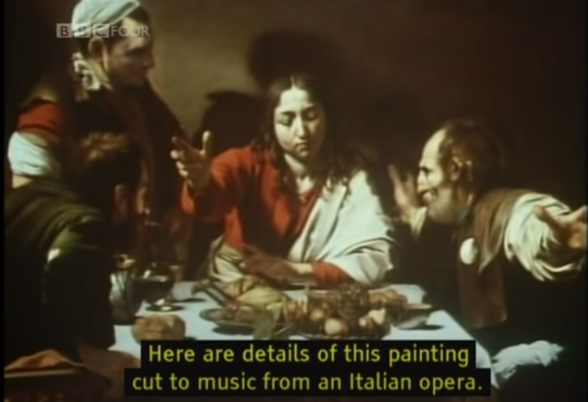

Specifically, in episode 1, through different images and sounds, they showed how context mattered when it came to art and how we perceive art. If you look at the same painting but put different music in the background, you would have different ideas of what the painting was about. If you put sad music to one painting, you may think of it as being a sad image. While if you put angry music to the background, you may perceive it as being a painting exemplifying aggression.